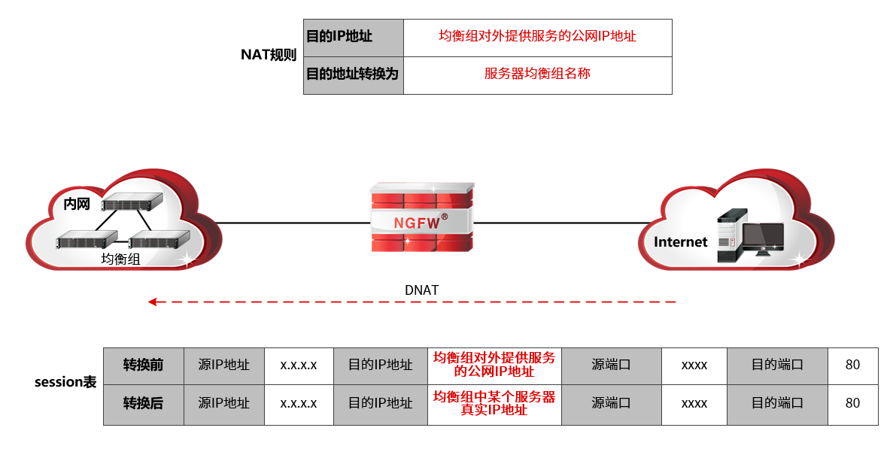
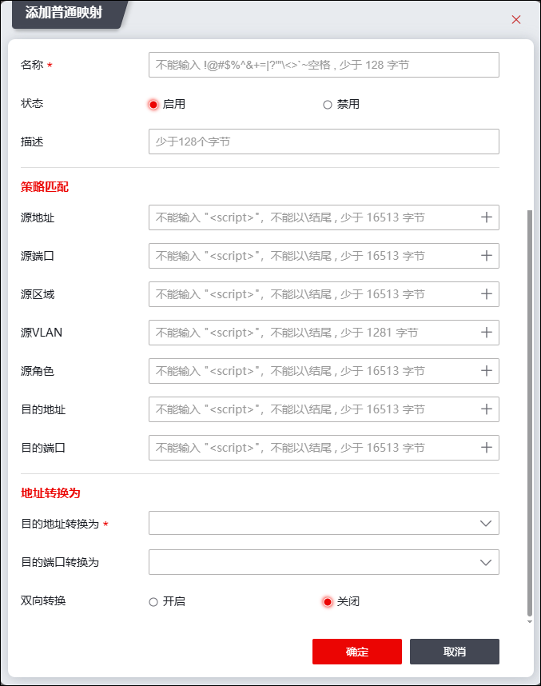
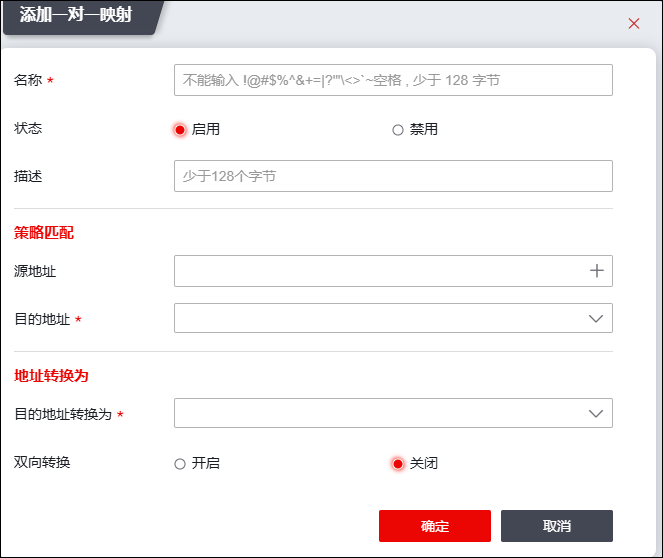

服务器映射即DNAT（Destination Network Address Translation，目的地址转换），可以转换数据报文的目的IP地址。该种转换方式主要应用于公网用户访问使用私网IP地址的局域网资源；在此网络应用环境下，公网用户的数据报文通过局域网边界的NGFW时，NGFW会将数据包的目的IP地址转换为内网资源服务器真实的IP地址，从而实现公网用户成功访问内网资源的目的。
DNAT分类
为适应不同的应用场景，NGFW通过DNAT技术可实现的功能主要包括：1）静态映射；2）服务器负载均衡。具体如下：
参数 |
说明 |
|---|---|
静态映射 |
该种转换方式属于一对一映射，根据映射关系，转换报文的目的IP地址为特定IP地址。 如内网服务器通过公网IP地址对外提供服务，当用户通过服务器公网IP地址访问服务器时，NGFW可根据静态映射技术将用户数据包中的目的IP地址转换为服务器真实的IP地址，实现用户访问内网资源服务器。 说明： 配置静态映射DNAT规则时，“目的地址”需配置为服务器对外提供服务的公网IP地址，“目的地址转换”需设置内网服务器真实的IP地址。 |
服务器负载均衡 |
该种转换方式会转换报文目的IP地址为地址池中的某个IP地址。 用户访问内网资源服务器时，NGFW通过结合服务器均衡组，将用户数据包中目的地址根据均衡组的负载均衡算法转换为均衡组中某个服务器的真实IP地址。 说明： 配置服务器负载均衡DNAT规则时，“目的地址”需配置为均衡组服务器对外提供服务的IP地址，“目的地址转换”需配置特定均衡组，关于均衡组的配置具体请参见 负载均衡。 |
应用场景举例
NGFW部署于局域网和公网的边界，私网中有多台服务器通过公网IP地址对外提供相同服务，其网络拓扑结构如下图所示。需求：多台服务器能以负载分担的方式处理外网用户的请求。

实现方案：配置服务器均衡组对象并结合DNAT规则，其中，服务器均衡组对象为多台服务器真实IP地址（均衡组对象），DNAT规则的“目的地址”配置为服务器组对外提供服务的公网IP地址，“目的地址转换为”引用服务器均衡组，其DNAT规则配置方法如上图“NAT规则”所示。
用户访问以负载均衡方式提供服务的服务器时，NGFW处理数据流程如下：
1）NGFW接收到用户访问均衡组的数据包后，会按顺序匹配NAT规则表，发现有匹配数据报文的DNAT规则则停止检索。
2）根据成功匹配的DNAT规则，并依据均衡组的负载均衡算法，选择均衡组中某个服务器的真实IP地址替换用户请求包的目的IP地址，并创建会话，然后将用户请求报文转发至真实服务器。
3）NGFW接收到服务器的响应报文后，根据步骤2）创建的会话表，将报文的源地址替换为转换前IP地址，然后将报文发送给用户。
配置DNAT的具体操作如下：
| 步骤1 | 选择 。 |
| 步骤2 | 配置地址转换。 |
1）点击“ ”，选择“普通映射”页签，弹出添加服务器映射规则窗口，如下图所示。
”，选择“普通映射”页签，弹出添加服务器映射规则窗口，如下图所示。

在添加普通映射规则时，各项参数的具体说明如下表所示。
参数 |
说明 |
|
|---|---|---|
名称 |
必填项。不能输入!@#$%^&+=1?1<>'~空格，少于128字节。 |
|
状态 |
状态可选项：启用、禁用。 |
|
描述 |
输入该规则的描述信息，不能输入<>\，少于128字节。 |
|
源地址 |
配置数据报文的源地址应满足的条件。 点击下拉列表选择已设置好的地址对象，或者点击『添加』，新建地址对象，关于地址对象的配置请参见 地址。 |
|
源端口 |
配置数据报文的源端口应满足的条件。点击下拉列表选择已设置好的服务对象，或者点击『添加』，新建服务对象，关于服务对象的配置请参见 服务。 |
|
源区域 |
配置数据报文的源区域应满足的条件。点击下拉列表选择已设置好的区域对象，或者点击『添加』，新建区域对象，关于区域对象的配置请参见 区域。 |
|
源VLAN |
配置数据报文的源VLAN应满足的条件。点击“+”选择已设置好的VLAN对象，或者点击『添加』，新建VLAN对象，关于VLAN对象的配置请参见 VLAN。 |
|
源角色 |
配置数据报文的角色应满足的条件。点击“+”选择已设置好的角色对象，或者点击『添加』，新建角色对象，关于角色对象的配置请参见 角色。 |
|
目的地址 |
配置数据报文的目的地址应当匹配的条件。点击下拉列表选择已设置好的地址对象，或者点击『添加』，新建地址对象，关于地址对象的配置请参见 地址。 |
|
目的端口 |
配置数据报文的目的端口应满足的条件。点击下拉列表选择已设置好的服务对象，或者点击『添加』，新建服务对象，关于服务对象的配置请参见 服务。 |
|
目的转换 |
目的地址转换为 |
配置DNAT规则转换后的主机地址对象或者负载均衡组对象。关于地址对象的配置请参见 地址，关于负载均衡组的配置具体请参见 负载均衡。 |
目的端口转换为 |
设置转换后的服务端口，可以选择系统预定义的服务或用户自定义的服务。 说明： 当目的地址转换规则仅需要做目的地址转换时，该参数可不做配置。 当目的地址转换规则需要做目的端口转换时，“目的地址转换”参数必须配置。 |
|
双向转换 |
源地址转换 |
可选项。选择转换后的主机地址、地址组对象、子网对象、地址范围或区域对象。 说明： 1）选择主机地址对象时，表示将源地址固定映射为某一合法IP地址； 2）选择地址范围和子网对象时，表示将源地址动态映射为某一网段或某一地址范围的地址； 3）选择区域对象时，表示将源地址转换为具有该区域的物理接口的地址（默认映射为端口的主地址），此时要求区域对象必须与物理接口绑定。 |
sticky NAT |
源IP转换同一性开关。启动后，相同源IP的数据包经过地址转换后为其转换的源IP地址相同。 |
|
源端口转换方式 |
下拉框选项包括：优先使用原始源端口、随机转换源端口、不转换源端口。 说明： 优先使用原始源端口：首先尝试使用源端口，如果源端口被占用，则转换为其他未被占用的端口。 随机转换源端口：随机转换源端口，转换后的源端口由系统内部确定。 不转换源端口：不转换源端口。 |
|
目的地址转换为 |
配置DNAT规则转换后的主机地址对象或者负载均衡组对象。关于地址对象的配置请参见 地址，关于负载均衡组的配置具体请参见 负载均衡。 |
|
目的端口转换为 |
设置转换后的服务端口，可以选择系统预定义的服务或用户自定义的服务。 说明： 当目的地址转换规则仅需要做目的地址转换时，该参数可不做配置。 当目的地址转换规则需要做目的端口转换时，“目的地址转换”参数必须配置。 |
|
|
²如果在某一条DNAT规则中设置了多个条件，则数据包必须同时满足这些条件才认为成功匹配该规则，才根据规则相应的动作转换数据包的IP地址或端口。 |

2）点击【确定】按钮完成DNAT规则的配置。
| 步骤3 | 配置一对一转换。 |
1）点击“”，选择“一对一映射”页签，弹出添加服务器映射规则窗口， 如下图所示。

在添加一对一转换规则时，各项参数的具体说明如下表所示。
参数 |
说明 |
|---|---|
名称 |
必填项。不能输入!@#$%^&+=1?1<>'~空格，少于128字节。 |
状态 |
状态可选项：启用、禁用。 |
描述 |
输入该规则的描述信息，不能输入<>\，少于128字节。 |
源地址 |
配置数据报文的源地址应满足的条件。 点击“+”选择已设置好的地址对象，或者点击『添加』，新建地址对象，关于地址对象的配置请参见 地址。 |
目的地址 |
配置数据报文的目的地址应当匹配的条件。点击“+”选择已设置好的地址对象，或者点击『添加』，新建地址对象，关于地址对象的配置请参见 地址。 |
目的地址转换为 |
配置DNAT规则转换后的主机地址对象，关于地址对象的配置请参见 地址。 |
源地址转换 |
转换模式选择“双向转换”时，显示该参数。选择转换后的主机地址、地址范围对象或子网对象。 说明： 1）选择主机地址对象时，表示将源地址固定映射为某一合法IP地址； 2）选择地址范围和子网对象时，表示将源地址动态映射为某一网段或某一地址范围的地址； |
源端口转换方式 |
转换模式选择“双向转换”时，显示该参数。下拉框选项包括：强制转换、不做转换、使用源端口。 说明： 优先使用原始源端口：首先尝试使用源端口，如果源端口被占用，则转换为其他未被占用的端口。 随机转换源端口：随机转换源端口，转换后的源端口由系统内部确定。 不做转换源端口：不转换源端口。 |
| 步骤4 | 点击【确定】按钮完成DNAT规则的配置。 |
| 步骤5 | 配置不做转换。 |
该操作步骤与配置NoNAT转换的操作步骤相似，此处将不再一一赘述，详情请参见 配置NoNAT转换。